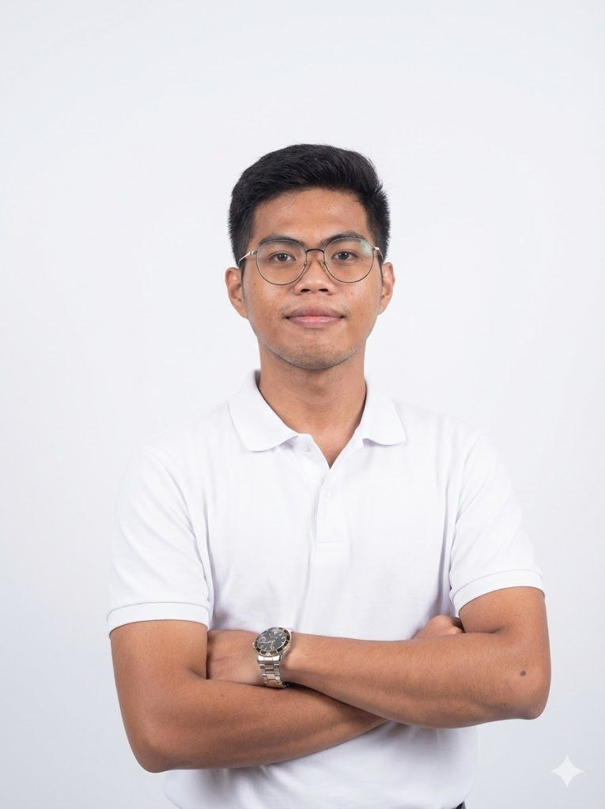

Fresh Electronics Engineering graduate who builds the layer between physical sensors and useful data — embedded firmware, LoRaWAN/IoT devices, and the dashboards that make their signal readable.

I'm James, a 2026 Electronics Engineering graduate based in San Pablo City, Laguna. My work sits at the intersection of embedded hardware, low-power wireless communication, and the software layer that turns raw sensor data into decisions people can act on.
That intersection is exactly what my thesis was built on: a LoRaWAN-enabled per-tree monitoring device, developed in partnership with DENR-CENRO Sta. Cruz, Laguna, that detects forest disturbance in near real time from hundreds of kilometers of unmonitored plantation.
Outside the lab, I led the Association of Future Electronics Engineers at LSPU-SPCC as President, and spent my internship at the San Pablo City Engineering Office applying that same hands-on approach to real infrastructure. I'm currently looking for roles in software development, AI engineering, and data annotation — anywhere that values building things that are actually tested in the field, not just in theory.
LoRaWAN-enabled per-tree forest monitoring device, in partnership with DENR-CENRO Sta. Cruz, Laguna.
Led the Association of Future Electronics Engineers at LSPU-SPCC.
San Pablo City Engineering Office, February–April 2026.
Grounded in embedded systems and hardware, extended into the full stack needed to make that hardware's data useful.
Two different problems, same approach: figure out what actually needs to be built, then ship it end to end.
LoRaWAN sensor node + Flask/Leaflet dashboard for real-time forest disturbance detection, built with DENR-CENRO Sta. Cruz.
View case study →Full title: Development of a LoRaWAN-Enabled Per-Tree Monitoring Device for Geolocation and Forest Disturbance Detection. Illegal logging and forest disturbance in unmonitored plantations often go undetected until it's too late. This project asked a narrower question: what if each tree could report on its own condition, over kilometers, on a battery that lasts months?
| Certification | Issuer | Date |
|---|---|---|
| Introduction to Modern AI | Cisco Networking Academy | July 2026 |
| Introduction to Data Science | Cisco Networking Academy | June 2026 |
| Introduction to Cybersecurity | Cisco Networking Academy | May 2026 |
| Yeastar Certified Technician | Yeastar | December 2025 |
| AWS Solution Architect – Associate | Alison | April 2024 |
Applied electronics engineering fundamentals to real municipal infrastructure work, translating classroom theory into field-ready practice.
Led the university's organization for future electronics engineers, overseeing programs and representing the student body.
Graduated 2026. Best Thesis awardee for the DENR-CENRO forest monitoring project.
Open to roles in software development, AI engineering, and data annotation. Based in San Pablo City, Laguna — open to remote and on-site work.